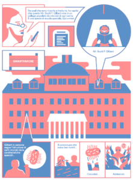
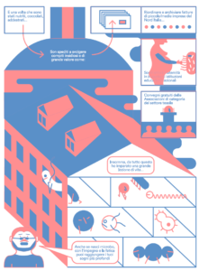

{Fanzine#5} That’s symbiosis, baby: arte, biologia e altre storie

Questo è il quinto articolo della nostra fanzine dedicata ai MICROBI, il tema che abbiamo affrontato a Scienceground 1.5. Trovi gli altri articoli e l’indice della fanzine qui:
- Un segnale nel rumore
- Gioco in società: il Dottor Semmelweis
- Gli infetti della Terra
- Intessere mondi
- That’s symbiosis, baby: arte, biologia e altre storie
[Illustrazioni di Enrico Salvador (fumetto), Cinzia Delnevo e fotografia di Leone Contini]
Intervista a Scott Gilbert, biologo evoluzionista e storico della scienza.
Venezia, un tardo pomeriggio di fine estate. È in corso la 58esima edizione della Biennale d’arte dal titolo May you live in interesting times, traduzione di una celebre maledizione cinese. Per parlare di questi tempi interessanti incontriamo in un bar dei Giardini della Biennale Scott Gilbert, embriologo e biologo evoluzionista. Non solo: Gilbert si occupa di storia e filosofia della biologia, ma anche di arte e di religione e ama tracciare connessioni inattese, raccontare storie sempre nuove. Così arriva entusiasta con il volantino del padiglione dei Paesi del Nord, Weather Report: Forecasting Future. Noi accendiamo il nostro registratore.

Anzitutto spiegaci cos’è questo volantino. C’entra col fatto che nel tuo articolo Understories: a common ground for Art and Science (Gilbert, 2019) ti sei chiesto se arte e scienza possono cooperare per salvarci dai danni che stiamo facendo al pianeta?
Sì. Sono appena stato a una mostra, qui, alla Biennale di Venezia. Parlava di cosa sta accadendo negli oceani. Sono contento di vedere artisti che parlano di scienza perché ne abbiamo bisogno. Noi umani non siamo bravi a guardare al futuro ma gli artisti stanno facendo proprio questo, ci stanno proprio dicendo: andiamo a vedere il futuro. Quali saranno le vite dei nostri discendenti? Io posso dire astrattamente di non volere quel mondo per loro, ma gli artisti sono capaci di rendermelo visibile: ecco il soggiorno dei miei pronipoti davanti ai miei occhi. Questo è il potere della fantasia! Ci permette di concepire cose che non sono accadute e magari non accadranno mai, dunque di agire. È una cosa che ci rende umani: costruiamo racconti e facciamo piani basati su quei racconti di fantasia. Per esempio, su quella strada ci sono leoni, tigri e orsi, su questa spiagge piacevoli e un sole splendente. Quale strada voglio percorrere? Non so cosa voglia dire essere sbranato da un orso, ma lo posso immaginare. Questo stanno facendo gli artisti per noi. Conoscono la scienza, leggono i rapporti degli scienziati e ne fanno una fantasia. Ci dicono: questo è il sentiero su cui stiamo camminando ora; vogliamo continuare lungo questa strada? Tutti hanno sentito dire del cambiamento climatico e di quanto sia dannoso, ma nessuno se lo immagina. Ecco cosa fanno gli artisti ed è qui che il loro lavoro diventa cruciale.
Dialoghi con l’arte, studi la storia della scienza, sei un biologo. Il tuo è un percorso eclettico: di cosa eri a caccia?
All’inizio, da giovane, ero un collezionista di farfalle. Tutti i miei amici sapevano il nome dei giocatori di baseball della National League, io sapevo il nome scientifico di ogni farfalla della East Coast. Mi interessavano le farfalle e le salamandre, mi emozionavano davvero e mi spingevano a stare all’aria aperta. Mi piaceva stare nei boschi, nei campi. Perciò ho sempre saputo che volevo essere un biologo ma ho anche sempre coltivato un certo interesse per la storia. Penso che molti embriologi siano interessati alla storia. In fondo ricostruiamo la storia di un corpo! Più tardi all’università seguii anche corsi di religione. Ero affascinato non tanto dalla religione in quanto dogma ma piuttosto da come le persone arrivassero a concepire il mondo. Quando infine arrivai alla Hopkins University, andai al dipartimento di storia della scienza e mi sedetti a un corso. Mi accorsi che integrava scienza e religione: d’altra parte Newton era un teologo, e così Boyle e Bacone. In questo modo ho cominciato a imparare molte cose sul dietro le quinte della scienza. Credevo di conoscerla, ma non sapevo perché la scienza fosse andata in quel modo e non in un altro, e la storia della scienza me lo stava spiegando. Poi ho conosciuto la filosofa Donna Haraway, quando venne al Journal Club del dipartimento di biologia: alzò la mano e decostruì l’intero programma di ricerca.
Il sentimento di curiosità che racconti, però, non sembra più molto appetibile nella nostra società quando si tratta di parlare di scienza.
Penso che gli scienziati abbiano cominciato ad essere imbarazzati dal senso di meraviglia. Eppure la meraviglia – credo – è stata una dei concetti chiave della scienza fin dai suoi albori. Aristotele e Platone dicevano che la filosofia comincia dal senso di stupore, e così la scienza, e dal canto loro anche i teologi dicono che l’adorazione e il timor di dio nascono da lì. È come se, in quel punto, scienza e religione entrassero in relazione: entrambe nipoti della meraviglia. Però, nella battaglia tra scienziati e teologi, il senso di meraviglia fu lasciato ai religiosi, mentre dovrebbe essere parte integrante del nostro modo di parlare di scienza. E invece parliamo di economia e raccontiamo che la scienza è buona perché ci consegnerà nuove tecnologie per vivere meglio. Sempre e soltanto giustificazioni economiche. Perché – si chiedono – dovremmo darvi dei soldi per capire come le tartarughe formano il loro guscio? Solo perché siete interessati? È difficile da giustificare al pubblico, eppure è una cosa meravigliosa! Come formano le tartarughe un nuovo guscio? Come nasce qualcosa di nuovo su questo mondo? Ora tutto lo si giustifica sostenendo che, per esempio, il tale studio aiuterà le persone con problemi alle ossa oppure ci aiuterà a capire come immagazzinare meglio il calcio. Tutto viene, insomma, fatto rientrare in una prospettiva antropocentrica di utilizzo, che è opposta alla curiosità e alla meraviglia.
È storia recente del XXI secolo oppure credi sia stata una tendenza anche del secolo scorso?
Tutto è cominciato alla fine del XX secolo. In quel periodo, attorno all’anno 1980, comincia anche la commercializzazione della biologia. Nella prefazione al suo libro Jurassic Park, Michael Crichton scrive brillantemente: “un tempo se eri un biologo e avevi rapporti con le aziende ti guardavano storto. Non ti consideravano un vero biologo: eri uomo d’affari. A partire dal 1980, se non hai rapporti con le aziende, allora non sei più un biologo. Per essere un buon biologo, devi essere un consulente per l’industria”. Le cose sono cambiate enormemente – e parte di questo cambiamento arriva da Reagan e Thatcher e da tutto quello che hanno rappresentato. Negli Stati Uniti nasceva in quegli anni l’idea che si potessero fare soldi fondando compagnie a partire dalle proprie ricerche. E alcune sentenze della Suprema Corte in materia di copyright hanno reso possibile trasformare un processo naturale in un brevetto. È così che tutt’a un tratto la biologia è entrata in affari. Prima, la biologia mainstream era soprattutto curiosità e divertimento. Guardavamo agli oceani, e perché? Semplicemente perché non ne sapevamo nulla. Avrebbe tutto molto più senso se la scienza ammettesse che la ragione per cui facciamo gli scienziati è perché non sappiamo le cose ma le vogliamo sapere. Anche ogni bambino, a suo modo, è uno scienziato. Ogni bambino raccoglie l’erba, la guarda, la odora, oppure si interroga sul blu del cielo. Gli scienziati mantengono quello sguardo e penso che questa sia la storia da raccontare.

Pensi che la commercializzazione della biologia abbia causato un distacco tra le persone e la biologia stessa?
Certo che sì. Pensiamo per esempio a quali direzioni sta prendendo la biologia, come lo Human Genome Project, che ha scatenato enormi aspettative. Cureremo malattie – si diceva – costruiremo un nuovo mondo attraverso il genoma! Non è successo ma, nel frattempo, in biologia se non ci si occupa di DNA è molto difficile ottenere fondi. E mentre il DNA ha davvero poco di tangibile, è purificato, in una provetta, la biologia è sempre stata una scienza palpabile, se non carnale. Ha a che fare con le piante che hanno a che fare col suolo che ha che fare coi lombrichi. Nonostante ciò, quel settore si è preso una gran fetta di cosa significhi oggi essere un biologo: una persona che lavora sul genoma. Susan Lindee ha cercato di capire come il DNA viene raccontato sulle riviste che la gente legge, come Newsweek, Vogue, Cosmopolitan – e non Pnas, Nature o Science. Il risultato è pauroso: di fatto il DNA è rappresentato come un’anima. È l’essenza che controlla il tuo carattere. Addirittura è ciò che ci permetterà di risorgere dopo la morte, come in Jurassic Park. E quest’idea la commercializzano e pubblicizzano: pensiamo a “23andMe.com” o “ancestry.com”… manda il dna che hai e ti dirò chi sei. Cazzate! Non ti dirà nulla dei tuoi amici, della tua formazione, del fatto che ti piaccia la montagna, nulla di ciò che sei davvero. Ti restituirà soltanto una probabilità statistica sull’origine dei tuoi antenati. Questo è la narrazione, il Dna è ciò che sei, e credo sia un grosso problema perché si tratta di biologia-spettacolo. Le persone però sanno che non è vero e così si rivoltano contro la scienza.
Sembra che il nostro modo di costruire la conoscenza e persino il modo di capire il mondo sia di fatto un racconto, e che ci siano sempre molte storie che si possono raccontare.
Lo penso con tutto il cuore. Come dicevo, ho lavorato con la filosofa Donna Haraway per un po’ e la narrazione è diventata un mio cruccio. Gli scienziati raccontano storie! Io sono finito a raccontare storie di animali. Per esempio: com’è che esiste il riccio di mare? È una grande storia animale! Molti anni fa, mi trovavo a Roma per un incontro organizzato dai gesuiti cui partecipavano anche diversi antropologi fisici molto conosciuti. Si parlava di evoluzione e una delle questioni era: c’è qualcosa che possa separare gli uomini dalle scimmie superiori in termini di abilità? La risposta era soltanto: nulla che si fossilizzi. Ma – aggiungevano – sembra che tutte le culture umane amino raccontare e ascoltare delle belle storie e questo sembra essere il tratto distintivo di ciò che ci fa umani. L’unica cosa a proposito di storie di scienza è che queste rispettino i limiti dei dati. Ma dentro quei limiti, si possono raccontare molte storie.
Qualcuno però direbbe che questa idea di racconto va contro l’argomentazione scientifica, descrittiva, razionale, esplicativa, diversa perciò dall’arte e dalla letteratura dove c’è invece la retorica.
Ma la letteratura scientifica è zeppa di retorica, solo che non vogliamo riconoscerlo. Nel Medio Evo e nel Rinascimento quando si scriveva di un leone, si scriveva di tutto quanto, dall’araldica al mito, e solo allora si poteva parlare di ciò che si era osservato. La Royal Society britannica decise per reazione che il processo scientifico si sarebbe scritto in modo così asciutto che tutto quanto poteva riassumersi in una ricetta e nelle istruzioni per l’uso, lasciandosi alle spalle l’eredità culturale. È così la scienza ha cominciato a essere la cultura del senza cultura. Ma i miti, credo, sono ancora lì. Pensiamo alla storia della fecondazione. È la storia di un eroe espulso dal suo regno che esplora un regno di tenebra, attraverso un lungo e pericoloso viaggio. C’è una lotta alla fine e chi sopravviverà avrà la principessa. Questa è la storia della fecondazione che raccontiamo, ma è come l’Eneide: una narrazione nobilitante sulle proprie origini. Così finiamo per essere il prodotto di un eroe e di una principessa. Molto poi è iscritto nel nostro linguaggio: chiamiamo lo sperma e l’ovulo gameti, da gamos, matrimonio… Sono la coppia della fecondazione!
È però anche una narrazione maschilista, in cui l’apparato riproduttivo femminile è passivo. In realtà quando gli spermatozoi sono eiaculati sono immaturi, senza alcuna speranza di fecondare un ovulo. Sono proprio le cellule dell’apparato femminile che li fanno maturare. E poi, l’ovulo emette segnali per farsi trovare. E finalmente, quando lo spermatozoo arriva non penetra la cellula ma si fonde con la sua membrana. Non è un atto violento! Deve aspettare perché anche l’ovulo non è maturo e matura proprio grazie alla materia dello spermatozoo. Funziona tutto in modo mutualistico, diciamo. Ma questo non è il modo che si usa per parlare di fecondazione. Il mito, al contrario, è quello di un vincitore piglia-tutto. È per questo che credo sia molto importante che la scienza sia multiculturale, per avere metafore molteplici, molteplici miti che possano essere riconosciuti in quanto tali.
Oggi il mito più diffuso in biologia è quello della competizione. Così si dice della biologia darwiniana: che è la biologia della competizione. Darwin ovviamente prese la sua teoria evolutiva dall’economia mercantile di Malthus, ma sapeva che stava usando una storia economica di scarsità delle risorse e ne era molto conscio. Poi però le persone hanno dimenticato ciò che lui sapeva e hanno cominciato a dire che la teoria dell’evoluzione dimostra che la natura è capitalista. Al contrario, sappiamo oggi, non solo per esperienza ma anche perché abbiamo tecnologie migliori, che esiste cooperazione, e molta, ad ogni livello fondamentale della vita: ecologico, cellulare, genomico. Al punto che la simbiosi è l’emblema stesso della vita sulla Terra.
I batteri sono un altro esempio di questa cooperazione.
Eccome! I batteri non sono soltanto compagni di viaggio che entrano nel nostro corpo come adulti consenzienti. No, di fatto formano il nostro corpo: non siamo solo composti di cellule che discendono dall’ovulo fecondato, ma metà di noi stessi viene dai batteri. Formano i capillari nel nostro intestino e fanno parte del nostro tessuto immunitario. Quando si fa storia dell’immunologia si parla di norma del Sé contro tutti: ecco me stesso, puro, prodotto di un ovulo fecondato, suscettibile a enti esterni, a batteri che stanno per mangiarmi, ma per fortuna ho un sistema immunitario che mi difende. Questa storia risale al 1910 e fu enfatizzata negli anni 80 durante l’epidemia di AIDS. Ma è solo una parte del racconto. Il sistema immunitario lavora contrattando con il mondo esterno sia positivamente che negativamente. Così anche coi batteri: i batteri devono entrare nel nostro corpo per formare il tessuto linfoide associato all’intestino, che ci permette di assorbire il cibo e non di reagire contro di esso. Questo tessuto è formato dai batteri che abbiamo ricevuto da nostra madre, attraversando il canale del parto, oppure più tardi, e il sistema immunitario non solo li lascia fare ma sa che sono indispensabili. È come se fosse un guardiaparco che lavora con loro per costruire quell’ecosistema che è il nostro corpo. Ma come diffondere la voce? Che siamo una specie basata sulla cooperazione e che tutte le specie lo sono e che l’embriologia si occupa più di relazioni che di entità?

Stampa su PVC, Collezione D-0 ARK, Biennial, Konjic, Bosnia
Il bunker ARK D-0, in Bosnia, è un atto di ybris nell’era dell’antropocene: ritenere che sventrare una montagna e riempirla di cemento possa garantire uno spazio sicuro all’interno di un ecosistema contaminato da una guerra nucleare. In collaborazione con l’Università di Tor Vergata di Roma, alcuni frammenti del bunker sono stati analizzati in laboratorio: quella che era stata immaginata come discontinuità radicale all’interno della biosfera pullula di vite infinitesimali, perlopiù batteri e muffe. Ancestors, opera site specific parte della collezione permanente di D-0 Ark Biennial, è un tentativo di ritrarre i veri padroni di questo luogo, che nel suo fallimento epocale racconta la nostra impossibilità di sopravvivere all’alterazione violenta degli equilibri naturali. La stampa su pvc è concepita per essere calpestabile e diventare uno sfondo per selfie con i nostri microscopici progenitori, antenati comuni e probabili successori della nostra specie auto-estinta. Progetto in collaborazione con il Dipartimento di Biologia dell’Università “Tor Vergata”. Si ringraziano in particolare: la Dottoressa Laura Bruna, la Dottoressa Roberta Congestri, il Professore Domenico Frezza, il Dottore Angelo Gismondi, la Dottoressa Elena Romano del Centro di Microscopie Avanzate “P. Albertano”, il Professore Stefano Rufini.
Bibliografia
(Gilbert, 2019) Scott F. Gilbert and S. R. Gilbert, “Understories: A Common Ground For Art And Science”, 2019. Exhibition Catalogue for ‘ , ‘ /~mediums,.’_ ” bodies,.’_ ” ° ∞ logs,∞ ‘ , ‘ /~ ‘ holes, .’ -. .’ — °habitats / /‘ * ‘-‘ . ‘ , ‘ /~want to feel (,) you inside | * . . * * | * . . *./. .-. ~ .’ ‘ , ‘ /~` ? ☼ ~.